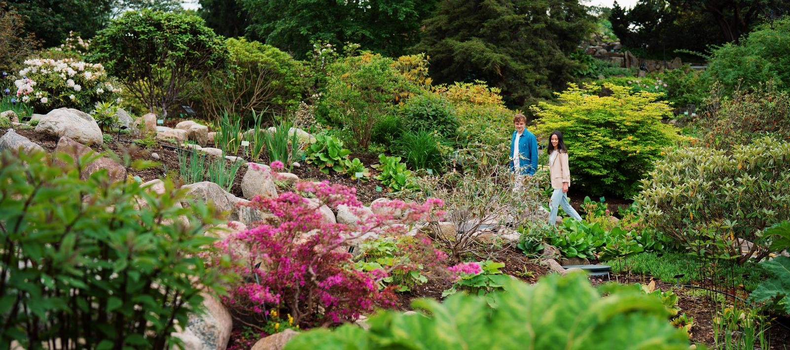
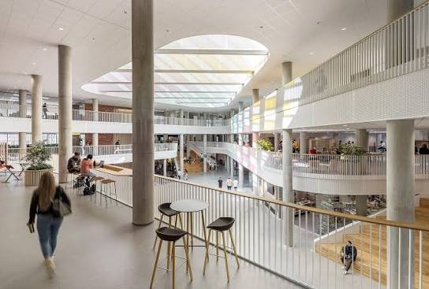
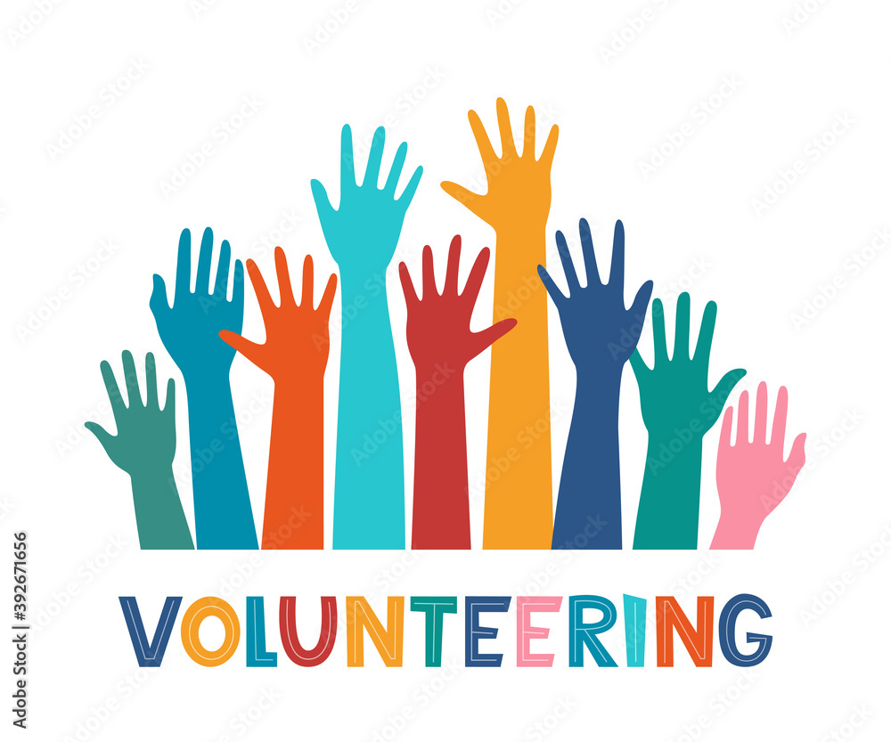
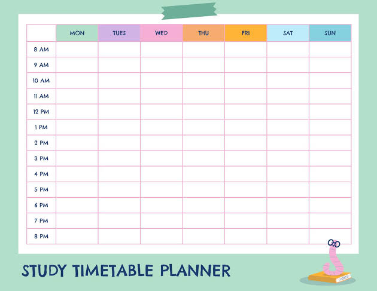

A responsive web guide helping plant enthusiasts track watering schedules, light levels, and care tips for indoor plants.
A responsive web guide for watering schedules, light needs, and care routines.
Technologies: HTML5, CSS Grid, Flexbox
View Project
A modern landing page designed to help international students navigate their first weeks at VIA University College.
A modern landing page helping new international students navigate campus life.
Technologies:HTML5, Semantic Elements, Media Queries
View Project
A clean website for local volunteer initiatives featuring event calendars, volunteer sign-ups, and organization news.
A clean website featuring local service events, sign-ups, and initiative updates.
Technologies: HTML5, CSS Flexbox, External CSS
View ProjectAn interactive photo and restaurant guide showcasing must-try street food spots and cozy eateries across Warsaw.
An interactive culinary directory mapping top street food spots and cozy eateries.
Technologies:HTML5, CSS Grid, Responsive Images
View Project
A minimalist front-end interface built to organize weekly study schedules, project deadlines, and reading lists.
A clean front-end tool organizing weekly study schedules, deadlines, and reading lists.
Technologies: Semantic HTML5, CSS Layouts
View Project© Wojciech Zaremba